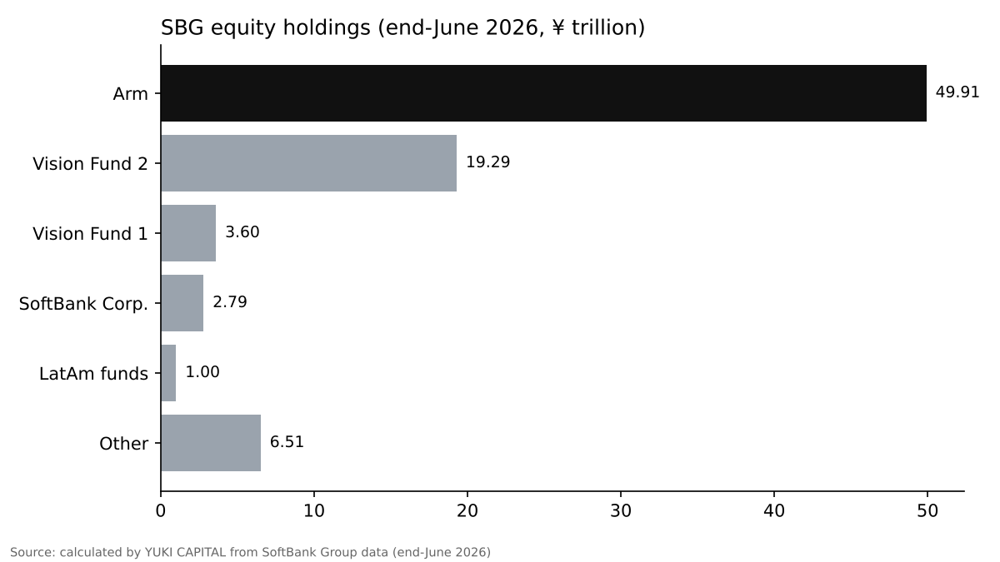
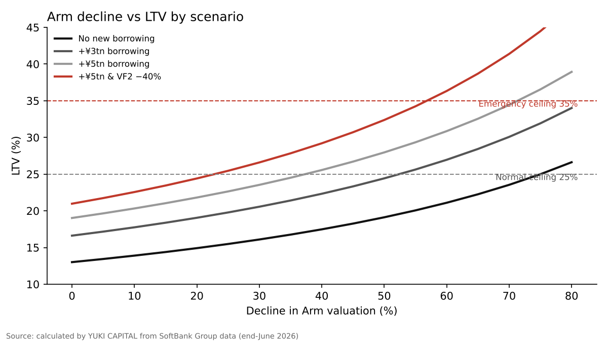

Musk's "Turbine Default" Claim and a Democratic Congress: How Far Can They Shake SoftBank Group's Finances?
On 6 November 2026, Elon Musk wrote on X that SoftBank Group (SBG) was defaulting on its turbine orders [1]. The same week, Democrats won majorities in both chambers of the US Congress in the midterm elections, and AI and chip stocks were sold off hard [4][12].
The question here is: how far would Arm's valuation, the value of SBG's OpenAI-related holdings, and new borrowing have to move before SBG's own yardstick, LTV (net debt as a share of equity holdings), approaches the ceiling SBG has set for itself?
Starting from the end-June 2026 figures SBG has published, I vary three assumptions and trace the channels through which Musk's claim and the change in Congress could matter.
- On end-June figures, Arm alone would need to fall 75% for LTV to reach the 25% normal-times ceiling. On share prices alone, the headroom is still large.
- Borrowing is what bites. With ¥5 trillion of new borrowing, a 37% fall in Arm is enough to reach 25%.
- Neither Musk's claim nor a Democratic Congress moves LTV directly. The former works through funding conditions, the latter through chip share prices, Arm included. The two numbers to watch are the LTV in the results and the amount of new borrowing.

Question and background
Musk's post was a reply to market chatter about a seller trying to offload a bundle of data center loans. The bundle reportedly included a $25 million slice of financing tied to a Stargate site in New Mexico [1]. The post gave no amount and no evidence, and SBG had not responded publicly at the time of reporting [1]. SBG's shares fell more than 12% intraday that day [1].
Stargate is a plan by OpenAI, SBG, Oracle and others to build AI computing infrastructure in the US. The January 2025 announcement said $500 billion would be invested over four years, with SBG taking financial responsibility [2]. The next day, Musk wrote that SBG had secured well under $10 billion [3]. The latest post extends that claim. Reports say SBG's investment in OpenAI could exceed $30 billion, with part of it funded by a $5 billion loan backed by Arm shares [11].
Some definitions. LTV stands for loan to value; SBG defines it as net debt divided by the value of equity holdings [6]. A margin loan is borrowing secured by shares; if the collateral falls in price, the borrower can be asked for more collateral or repayment. SBG deducts its Arm-backed borrowing from the holdings side of the calculation [6]. NAV (net asset value) is the value of holdings minus net debt. The Vision Funds are SBG's vehicles for investing in companies, many of them unlisted; Vision Fund 2 holds the OpenAI stake [7].
On the political side, Democrats won majorities in the House and the Senate in the 3 November midterms [4]. In Texas, the Democrat elected governor has called for halting new data center projects and ending tax incentives [5]. The lawmaker set to lead the House oversight committee has also signalled tougher scrutiny of Musk [5].
Data and method
The starting figures come from SBG's shareholder value disclosure as of end-June 2026 [6]. Equity holdings were ¥83.11 trillion, net debt ¥10.81 trillion, LTV 13.0% and NAV ¥72.30 trillion. Arm accounted for ¥49.91 trillion of holdings, after deducting ¥3.22 trillion equivalent to the margin loan. Vision Fund 2 was ¥19.29 trillion and includes the OpenAI investment [7][8].
As financial policy, SBG has said it keeps LTV below 25% in normal times and caps it at 35% even in extraordinary times [9]. Rating agencies also use this ratio and cash on hand as core measures [10].
I kept the calculation simple. Let d be the decline in Arm's valuation, e the decline in Vision Fund 2, and X new borrowing. Then LTV = (10.81 + X) ÷ (83.11 − 53.13 × d − 19.29 × e). The ¥53.13 trillion is Arm's value before the deduction (49.91 + 3.22), and I assumed the secured borrowing does not shrink when the share price falls. The exchange rate is held at ¥162.39 per dollar, as in the disclosure [6]. The 40% fall in Vision Fund 2 stands for a markdown of unlisted holdings including OpenAI. The same week, Anthropic's IPO valuation was reported as possibly falling from $1.5 trillion to about $1 trillion, an example of unlisted AI valuations being cut by about a third [14].
Results

The starting LTV is 13.0%, 12 points below the 25% line. At end-June, NAV per share was ¥12,686, more than twice the ¥5,963 share price [6]. The market was not reflecting the value of the holdings in the share price at face value. Arm makes up 60% of holdings, followed by Vision Fund 2 at 23%. SBG's financial headroom is largely a function of one company's share price.
| Scenario | LTV |
|---|---|
| Start (end-June 2026) | 13.0% |
| Arm −20% | 14.9% |
| Arm −40% | 17.5% |
| Arm −60% | 21.1% |
| Arm −40% and Vision Fund 2 −40% | 20.0% |
For Arm alone to push LTV to 25%, Arm's valuation would have to fall 75%. Reaching 35% would take a 98% fall, close to a total loss. Share price declines alone rarely reach the policy ceilings.
Sensitivity analysis

What matters is additional borrowing. With ¥3 trillion of new borrowing, a 40% fall in both Arm and Vision Fund 2 lifts LTV to 25.5%, above the normal-times line. With ¥5 trillion, the same conditions give 29.2%.
| New borrowing | Arm 0% | Arm −20% | Arm −40% | Arm −60% |
|---|---|---|---|---|
| ¥0tn | 13.0% | 14.9% | 17.5% | 21.1% |
| ¥3tn | 16.6% | 19.1% | 22.3% | 27.0% |
| ¥5tn | 19.0% | 21.8% | 25.6% | 30.9% |
| ¥5tn + VF2 −40% | 21.0% | 24.4% | 29.2% | 36.3% |
With ¥5 trillion borrowed and Vision Fund 2 down 40%, LTV reaches 36.3% when Arm is down 60%, above the 35% emergency ceiling. With ¥5 trillion of new borrowing, the Arm decline needed to reach 25% shrinks to 37%.
The exchange rate matters too. The disclosure uses ¥162.39 per dollar, while on 6 November the dollar was trading at around ¥158 [13]. The more holdings are in foreign currency, the more a stronger yen reduces their yen value and pushes LTV up. Treating everything except the domestic SoftBank Corp. stake (¥2.79 trillion) as dollar-based and holding net debt in yen, LTV would be 13.4% at ¥158 and 14.0% at ¥150. The currency effect alone is small compared with share prices and borrowing.
Discussion
Start with the opposing view. An LTV of 13.0% is far from the policy ceiling, and NAV stands at ¥72.30 trillion. Musk leads xAI, a competitor, and gave no amount or evidence for his claim [1]. On this view, the sell-off is a shock to reputation, not to the balance sheet.
Still, LTV is set by two things: share prices and borrowing. If additional investment in OpenAI or funding for Stargate is financed with debt, the numerator rises. Borrowing backed by Arm shares is structured so that more collateral is required as Arm falls [11]. Whether SBG funds itself through borrowing moves LTV more than whether Musk's claim is true.
The impact of a Democratic Congress has not become law. Yet fears of regulation on AI and chip companies sent chip stocks sharply lower the day after the election [12]. Arm is a chip design company, and through its share price those fears can reach 60% of SBG's holdings.
Limitations. The starting point is end-June data and does not include November's share price declines. The OpenAI valuation is treated as part of Vision Fund 2 and not separated out. The ¥3 trillion and ¥5 trillion of new borrowing are hypothetical, not figures from SBG's plans. The LTV definition is SBG's own; rating agencies may apply different adjustments [10].
There are three tests. Does the LTV reported in the 10 November results exceed 20%? Does funding for OpenAI and Stargate lean toward borrowing? Does Arm stay more than 40% below its end-June level? If two of the three come true, this article's conclusion needs rewriting.
Conclusion
On end-June figures, Arm alone would need to fall 75% for LTV to reach the 25% normal-times ceiling. On share prices alone, the headroom is still large.
Borrowing is what bites. With ¥5 trillion of new borrowing, a 37% fall in Arm is enough to reach 25%.
Neither Musk's claim nor a Democratic Congress moves LTV directly. The former works through funding conditions, the latter through chip share prices, Arm included. The two numbers to watch are the LTV in the results and the amount of new borrowing.
How I see it
Since Stargate was launched, Musk has said SBG does not have that much money. I see this post as part of the same line. What I consider most dangerous is the investment in OpenAI and the borrowing backed by Arm shares. If Arm falls, SBG will have to post more collateral, and I think that would be quite hard. I do not own SBG shares, but I am interested in the 10 November results. I want to check the numbers in this article against the LTV and the borrowing disclosed there.
References
- OfficeChai, "Softbank Is Defaulting On Its Turbine Orders, Claims Elon Musk", 2026-11-07, https://officechai.com/ai/softbank-is-defaulting-on-its-turbine-orders-claims-elon-musk/
- OpenAI, "Announcing The Stargate Project", 2025-01-21, https://openai.com/index/announcing-the-stargate-project/
- Axios, "Musk throws shade at Stargate", 2025-01-22, https://www.axios.com/2025/01/22/stargate-elon-musk-trump-altman-openai-project
- ABC7, "Midterm election 2026 live results: Dems take back Congress", 2026-11-04, https://abc7news.com/live-updates/midterm-elections-2026-live-updates-election-results-key-races-us/20001292/entry/20013786/
- The Star (Reuters), "Elon Musk's business empire braces for Democratic wave as Texas flips blue", 2026-11-04, https://www.thestar.com.my/news/world/2026/11/04/elon-musk039s-business-empire-braces-for-democratic-wave-as-texas-flips-blue
- SoftBank Group, "Shareholder value (SOTP) and LTV" (as of end-June 2026), https://group.softbank/ir/stock/sotp
- SoftBank Group, "Earnings results for Q1 FY2026", 2026-08-06, https://group.softbank/news/ir/20260806_1
- SoftBank Group, "Earnings datasheet Q1 FY2026", 2026-08, https://group.softbank/media/Project/sbg/sbg/pdf/ir/presentations/2026/earnings-datasheet_q1fy2026_02.pdf
- SoftBank Group, "Integrated Report 2022 (financial strategy)", https://group.SoftBank/system/files/pdf/ir/financials/annual_reports/annual-report_fy2022_03_ja.pdf
- Japan Credit Rating Agency (JCR), "SoftBank Group rating report", https://www.jcr.co.jp/download/3d6b75332f9b6de2b66ad7f2a635ada5ebea0770d0e8e2a850/23d1586.pdf
- Tom's Hardware, "SoftBank is seeking $5 billion loan to invest in OpenAI, plans to use Arm shares as collateral", https://www.tomshardware.com/tech-industry/artificial-intelligence/softbank-is-seeking-usd5-billion-loan-to-invest-in-openai-plans-to-use-arm-shares-as-collateral-rapid-ai-expansion-continues-investment-could-top-usd30-billion
- investingLive, "Nikkei drops 3% as Democratic midterm gains hit AI and chip stocks", 2026-11-04, https://investinglive.com/stock-market-update/nikkei-drops-3-as-democratic-midterm-gains-hit-ai-and-chip-stocks/
- Bank of Japan, "Time-series data (foreign exchange)", https://www.stat-search.boj.or.jp/
- Decrypt (via Yahoo Finance), "Anthropic IPO Valuation Could Be Slashed in Half to $1T After AI Stock Rout: Report", 2026-11-07, https://finance.yahoo.com/markets/stocks/articles/anthropic-ipo-valuation-could-fall-162858848.html
Charts by YUKI CAPITAL. Header photo: Tom Arran (Unsplash)
I record my daily numbers and decisions on X.